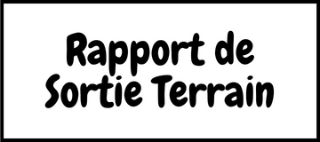

Mon mail: felipeagmt96@gmail.com
Mon mail: felipeagmt96@gmail.com
Stage Master 1 - Mise en Place d'un Processus Complet de Collecte, de Traitement et d'Exploitation des Données
Topo Airtech:
• Société géomatique Toulouse
Société Toulousain créée en 2015 spécialisée dans la capture et le traitement des données de drone, ainsi que le traitement des données géospatiales des avions et des satellites.
- Periode de stage : 20/03 à 18/08/2023
Felipe AGUIAR MARTIN:
• Licence Biologie - Université Federal du Paraná (Curitiba, BR)
• Spécialisation Géotraitement - PUC Minas IEC (Minas Gerais, BR)
• Master Géomatique - Université de Toulouse (Toulouse, FR)
Biologiste géomètre d'origine brésilienne et nationalité française, résidant en France depuis 2022.
Les projets développés pendant le stage.
 Mon mail: felipeagmt96@gmail.com